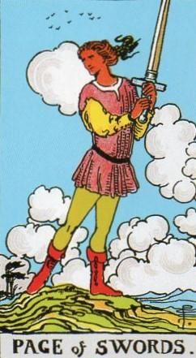
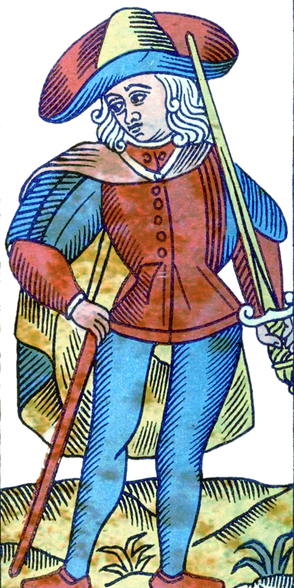
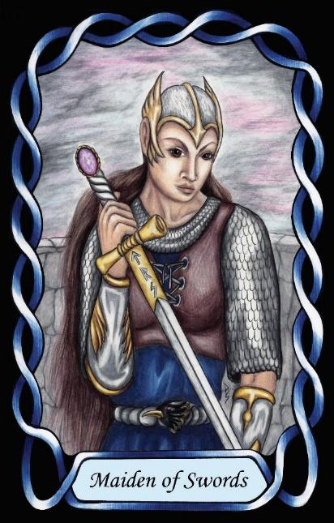

Page of Swords
The Provider (ESFJ – FeSi)



Page |
Concrete Collaborative |
||
Socio-Political |
|||
Extroverted Feeling Introverted Sensing |
|||
12.3% of population |
|||
Examples: Allison Hannigan, Anne Hathaway, Sally Field |
|||
Meaning of Life: Supporting family |
|||
Astrology: Aquarius |
|||
Pages of Swords are socially responsible, attentive, and community-oriented individuals who bring care into the realm of communication and social structure. As SF Pages, they are concrete, collaborative, and motivated by the wellbeing of others. Their extroverted feeling drives them to maintain harmony, uphold social expectations, and ensure that everyone feels included and supported.
Their introverted sensing gives them a strong respect for tradition, routine, and established norms. They understand how social systems work and how to maintain them. This combination of Fe and Si makes them reliable, considerate, and deeply invested in the functioning of their community.
Placed in the Air suit of Swords, their nurturing instinct becomes socially structured. They are the providers, organisers, and caretakers of the Swords domain — individuals who ensure that groups run smoothly, that people communicate clearly, and that social obligations are met. They excel at coordinating, hosting, and maintaining the social fabric.
Pages of Swords thrive in environments where they can support others through organisation, communication, and interpersonal care. They are at their best when creating stability — whether through planning, mediating, or simply being the dependable presence others rely on.
At their core, they seek belonging and mutual support. Their meaning in life is found in maintaining social harmony, fulfilling responsibilities, and ensuring that everyone feels part of something larger. They are the Providers of the Swords suit — warm, structured, and socially dependable.